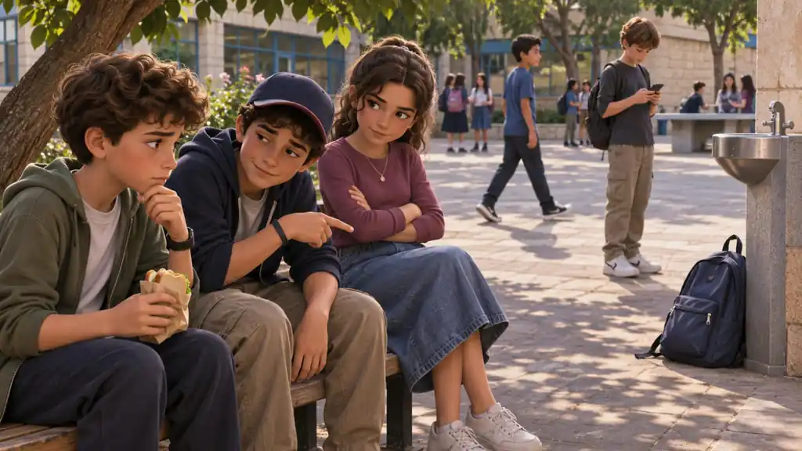

כיתות ד'–ו'
מבחן ההפסקה הגדולה
משחק כיתתי על לחץ חברתי ושמירה על הבחירה שלנו
חגית כהן CBT | חברתי
3 כלים לשמור על הבחירה שלנו
❄️ קפיאה!
משוב קצר
מה למדנו?
🛡️
כל הכבוד לכיתה!
היום תרגלתם איך לשמור על הבחירה שלכם גם כשלוחצים עליכם 💛
🔁 התקליט השבור🚪 משפט סיום ויציאה🔄 החלפת פעילות🙋 בקשת עזרה